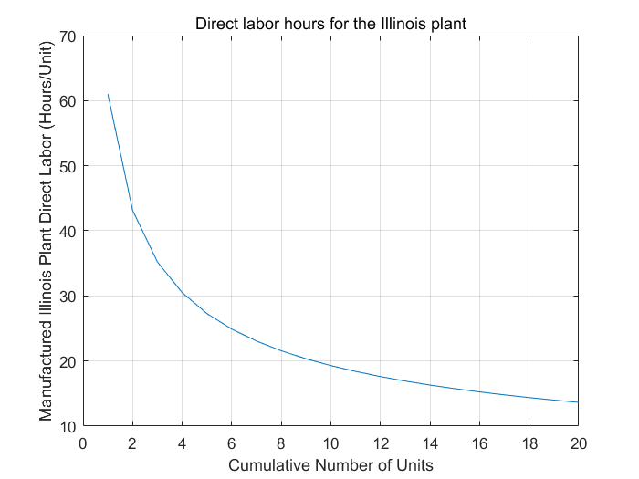
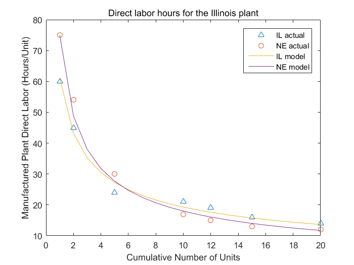

Contents
%%%%%%%%%%%%%%%%%%%%%%%%%%%%%%%%%%%%%%%%%%%%%%%%%%%%%%%%%%%%%%%%%%%%% % ENGR 132 % Program Description % ... % % Assigment Information % Assignment: PS 02, Problem #2 % Author: Yuefan Fu, fu194@purdue.edu % Team ID: 001 % Contributor: %%%%%%%%%%%%%%%%%%%%%%%%%%%%%%%%%%%%%%%%%%%%%%%%%%%%%%%%%%%%%%%%%%%%%
__________________
INITIALIZATION
[a,b,c] = textread('Data_direct_labor_costs.txt','%d%d%d','headerlines',1) A=[a,b,c]
a =
1
2
5
10
12
15
20
b =
60
45
24
21
19
16
14
c =
75
54
30
17
15
13
12
A =
1 60 75
2 45 54
5 24 30
10 21 17
12 19 15
15 16 13
20 14 12
__________________
CALCULATIONS
Model1 = 61 * a.^(-0.5) Model2 = 75 * a.^(-0.62)
Model1 = 61.0000 43.1335 27.2800 19.2899 17.6092 15.7501 13.6400 Model2 = 75.0000 48.8003 27.6503 17.9912 16.0683 13.9922 11.7064
__________________
MODEL SMOOTHNESS CHECK
smoothA = [1:20] smoothM1=61*smoothA.^(-0.5) plot(smoothA,smoothM1); title('Direct labor hours for the Illinois plant') xlabel('Cumulative Number of Units') ylabel( 'Manufactured Illinois Plant Direct Labor (Hours/Unit)') grid on
smoothA =
1 至 13 列
1 2 3 4 5 6 7 8 9 10 11 12 13
14 至 20 列
14 15 16 17 18 19 20
smoothM1 =
1 至 7 列
61.0000 43.1335 35.2184 30.5000 27.2800 24.9031 23.0558
8 至 14 列
21.5668 20.3333 19.2899 18.3922 17.6092 16.9184 16.3029
15 至 20 列
15.7501 15.2500 14.7947 14.3778 13.9944 13.6400
 __________________
FORMATTED FIGURES
smoothM2=75*smoothA.^(-0.62); plot(a,b,'^',a,c,'o',smoothA,smoothM1,smoothA,smoothM2); title('Direct labor hours for the Illinois plant') xlabel('Cumulative Number of Units') ylabel( 'Manufactured Plant Direct Labor (Hours/Unit)') legend('IL actual','NE actual','IL model','NE model');
__________________
ANALYSIS
-- Q1
Nebraska's plant have a more efficient training program as shown in the figure that first the direct labor was higher than Illinois but finally less than Illinois.
-- Q2
Training has minimized the cost of labor because people can spend less time to do the same amount work.
__________________
ACADEMIC INTEGRITY STATEMENT
I/We have not used source code obtained from any other unauthorized source, either modified or unmodified. Neither have I/we provided access to my/our code to another. The project I/we am/are submitting is my/our own original work.